Store Sales - Time Series Forecasting
This case study focuses on time-series forecasting to predict store sales using data from Corporación Favorita, a major grocery retailer based in Ecuador.
The objective is to develop a model that accurately forecasts unit sales for thousands of items across various Favorita stores. The dataset includes information such as dates, store and item details, promotions, and unit sales, providing an excellent opportunity to apply machine learning techniques.
The workflow involves the following steps:
Load Data: Import data from CSV files into a DataFrame.
Data Splitting: Split the dataset into training and testing sets for model development.
Model Training and Prediction: Train a machine learning model and use it to make predictions on the test set.
For additional details, visit Kaggle
Following steps were done in jupter notebook provided by Kaggle.
First Step: Setup necessary libraries
Let's write all the necessary libraries before exploring the data.
import numpy as np # linear algebra
import pandas as pd # data processing, CSV file I/O (e.g. pd.read_csv)
import matplotlib.pyplot as plt # Data visualization
import plotly.express as px # Data visualization
from sklearn.ensemble import RandomForestRegressor # RandomForestRegressor Model
from sklearn.metrics import mean_squared_error, mean_absolute_error # Precision testing
# Input data files are available in the read-only "../input/" directory
# For example, running this (by clicking run or pressing Shift+Enter) will list all files under the input directory
import os
for dirname, _, filenames in os.walk('/kaggle/input'):
for filename in filenames:
print(os.path.join(dirname, filename))
output:
/kaggle/input/store-sales-time-series-forecasting/oil.csv
/kaggle/input/store-sales-time-series-forecasting/sample_submission.csv
/kaggle/input/store-sales-time-series-forecasting/holidays_events.csv
/kaggle/input/store-sales-time-series-forecasting/stores.csv
/kaggle/input/store-sales-time-series-forecasting/train.csv
/kaggle/input/store-sales-time-series-forecasting/test.csv
/kaggle/input/store-sales-time-series-forecasting/transactions.csv
Wrangle Function
This function is used to read data from a file. Professionals often use this function to read different data files continuously.
We will explore all the files mentioned above in the next few cells
"""
This function load csv file to DataFrame
======================================
Parameter:
filepath-> str : (location of file)
Result:
df-> DataFrame
"""
def wrangle(filepath):
# Read into Data Frame
df = pd.read_csv(filepath)
# Changing date from object to datetime
df["date"] = pd.to_datetime(df["date"])
return df
# reading train data set to data frame using Wrangle function
filepath = ("/kaggle/input/store-sales-time-series-forecasting/train.csv")
df = wrangle(filepath).set_index("id")
# Let's see the Size of our data
df. shape
output:
(3000888, 5)
# Why don't we look into our sample data. Precisely, let's see 5 rows using "head"
df. head( )
output:
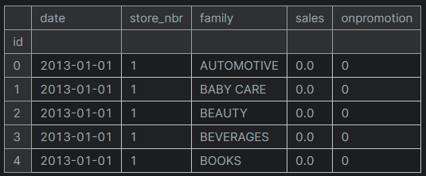Moving to Next Step: Let's look into Holiday data from "holidays_events.csv"
# reading holiday data to Data frame
df_holiday_path = "/kaggle/input/store-sales-time-series-forecasting/holidays_events.csv"
df_holiday = pd.read_csv(df_holiday_path)
df_holiday. head( )
output:
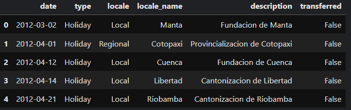There are 6 columns in the "holidays_events.csv" file, and some holidays are marked as transferred, which is indicated by the "transferred" column. After reviewing the data, I concluded that selecting dates with "False" in the "transferred" column includes all the required holidays.
First, we will create a mask to filter holidays where the "transferred" column is marked as "False".
Next, we will create a new dataframe named "df_holiday" and add the "date" column to it. This will help us identify the dates on which holidays occur.
Third, we will convert the "date" column to the "datetime" type, which will treat the column as a datetime object. This will be useful for working with time-series data (trends)
Lastly, we will create a new column named "is_holiday" and set its value to 1 for all rows to indicate that the date is a holiday.
# Creating the dataframe with transferred colum as false.Since it signify there's a special event and there's no transferred in date.
mask_holi = df_holiday["transferred"] == False
df_holiday = df_holiday[mask_holi]
df_holiday = df_holiday[["date"]]
df_holiday["date"] = pd.to_datetime(df_holiday["date"])
df_holiday["is_holiday"] = 1
df_holiday. head( )
output:
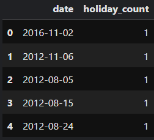There are multiple holidays or events on a single day. So, let's count the number of holidays or events for each day and then sort the dates based on the count of holidays or events.
# Aggregating number of holiday in a day
df_holiday = df_holiday["date"]. value_counts().sort_values().to_frame(name="holiday_count").reset_index()
It's time to merge the holiday data with our training data. We will fill in "0" for days with no holiday to simplify calculations in later stages.
Here, I have used the name "df_holi_int" to distinguish it from "df," as we added the new column "is_holiday" from df_holiday.
# Merging holiday date to train data
df_holi_int = df.merge(df_holiday[["date", "holiday_count"]], on = "date", how = "left" )
df_holi_int["holiday_count"] = df_holi_int["holiday_count"].fillna(0).astype(int)
Are you excited to look our data frame after adding "is_holiday" columns?
df_holi_int.head()
output:
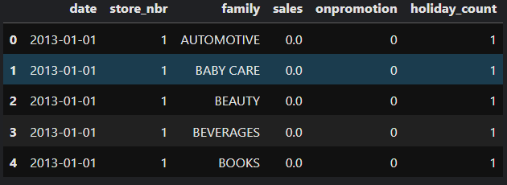Adding new feature "oil_price" from "oil.csv"
# Reading oil data to Data frame
df_oil_path = "/kaggle/input/store-sales-time-series-forecasting/oil.csv"
df_oil = pd. read_csv(df_oil_path)
df_oil["date"] = pd.to_datetime(df_oil["date"])
df_oil = df_oil.rename(columns = {"dcoilwtico": "oil_price"})
df_oil.head()
output:
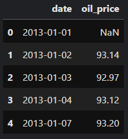To analyze trend data, the first step is to plot it. This visualization helps identify whether the data is complete and reveals its overall tread.
# Plotting oil price
plt.plot(df_oil["date"], df_oil["oil_price"])
plt.xlabel("Day")
plt.ylabel("Oil price")
plt.title("Daily oil price");
output:

This analysis provides insights into the peak and lowest prices and the state of oil prices at the time of data collection. These observations are valuable for evaluating the dependency of oil prices on sales.
Let's add this column to our training data set.
# Adding oil_price column to training data
df = df_holi_int.merge(df_oil[["date", "oil_price"]], on = "date", how = "left" )
df.head()
output:

Finally, we have gathered all the necessary data for our modeling. Let's take a look at the information in the data frame.
df.info()
output:
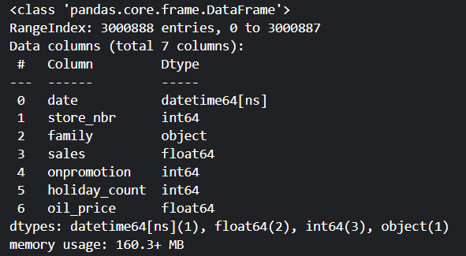All the data here are numeric except date and family columns. We wil remove date and change family column to numeric. But first, let's check if there's any missing values in columns.
# Look if there's any missing data present at any column of our data frame
df.isnull().sum()
output:
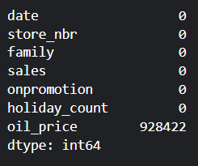As expected, the plot above have already revealed that there are many missing values in the oil_price data. Before filling these missing values, let's remove the unnecessary column, "date".
We are removing the "date" column because we are using the RandomForestRegressor, which does not inherently utilize date values for modeling.
# Dropping Date column
df = df.drop(columns = "date")
df.head()
output:
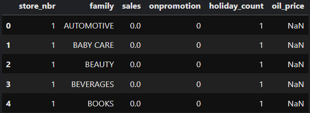Now, we will fill the missing values in the oil_price column using a combination of forward fill and backward fill methods.
# Replace all NaN of oil_price with forward and backward fill
df["oil_price"] = df["oil_price"].ffill()
df["oil_price"] = df["oil_price"].bfill()
output:
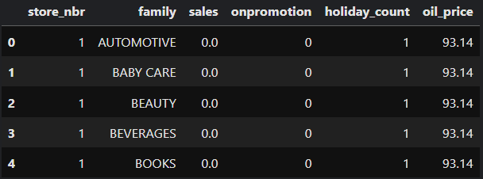We are done cleaning training data.
Let's repeat the same process of adding "holiday" and "oil" columns to test data.
First, let's read the data into the Data Frame.
# Let's read test data into the data fame
df = pd.read_csv("/kaggle/input/store-sales-time-series-forecasting/test.csv")
test_data.head()
output:
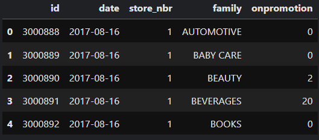# Change date into datetime format
test_data["date"] = pd.to_datetime(test_data["date"])
test_data.info()
output:
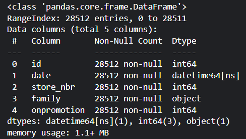# Now let's merge holiday data
test_holi_int = test_data.merge(df_holiday[["date", "holiday_count"]], on="date", how="left")
test_holi_int["holiday_count"] = test_holi_int["holiday_count"].fillna(0).astype(int)
test_holi_int.head()
output:
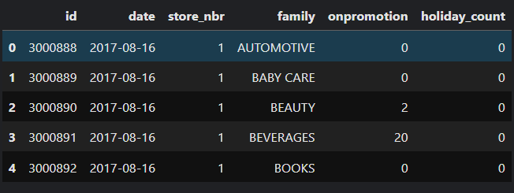# Adding oil_price column to training data
test_data = test_holi_int.merge(df_oil[["date", "oil_price"]], on="date", how="left")
test_data.head()
output:
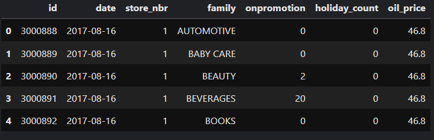# Replace all NaN of oil_price with forward and backward fill
test_data["oil_price"] = test_data["oil_price"].ffill()
test_data["oil_price"] = test_data["oil_price"].bfill()
# Dropping the date column and setting index to id
test_data = test_data.drop(columns = "date")
test_data = test_data.set_index("id")
test_data.head()
output:
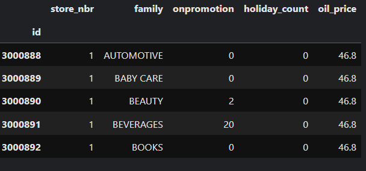Split the data
Now it's time to split the data into training and test sets. Since this is a time series dataset, we will use a cutoff point to divide the data, ensuring the temporal order is preserved.
# splitting the data into train and test
target = "sales"
X = df.drop(columns = target)
y = df[target]
cutoff = int(len(df) * 0.8)
X_train, X_test, y_train, y_test = X.iloc[:cutoff], X.iloc[cutoff:], y.iloc[:cutoff], y.iloc[cutoff:]
There is a column "family" with categorical data, so let's convert it into a numeric format using one-hot encoding. This will create binary columns for each category, allowing the model to work with numeric data.
# initiating one-hot encoding to X_train
X_train_encoding = pd.get_dummies(X_train, columns = ["family"])
# initiating one-hot encoding to X_test data
X_test_encoding = pd.get_dummies(X_test, columns = ["family"])
# initiating one-hot encoding to test data
test_encoding = pd.get_dummies(test_data, columns = ["family"])
Model training
It's time to celebrate! We're at the moment to train our first model, RandomForestRegressor. This ensemble model combines the results of multiple decision trees to improve accuracy and reduce overfitting.
# Now it's time to train our RandomForestRegressor model
model = RandomForestRegressor(random_state = 42)
model.fit(X_train_encoding, y_train)
Now, that our model is trained. Let's predict our X_test
# Predicting the model
y_predict = model.predict(X_test_encoding)
Model Analysis
Now that we have our predictions, let's analyze the model's performance.
Here we will use "Root Mean Squared Logarithmic Error (RMSLE)" to evaluate accuracy, which calculates the square root of the average of the squared differences between the logarithms of the predicted and actual values.
# How good is our model? test using RMSLE
def rmsle(y_test, y_pred):
return np.sqrt(mean_squared_error(np.log1p(y_test), np.log1p(y_pred)))
rmsle_value = rmsle(y_test.reset_index().drop(columns="index", y_predict))
print(f"RMSLE value is: {rmsle_value}")
output:
RMSLE value is: 0.8924370427620725
What do you think about the result? For the model to be a good fit, both values should be lower.
Since this is our first model, it serves as the baseline. Now, we can explore other models to further reduce these values and improve the fit, right?
# Put predicted values in dataframe
y_predict_df = pd.DataFrame(y_predict, index=y_test.index, columns = ["Sales"])
y_predict_df.head()
output:
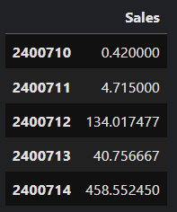Predicting test data
Our initial model performs well as a baseline, but it is too early to evaluate it using the test data. Instead, we should explore other models to further improve the current model's metrics.
However, as part of the learning process, we will proceed to predict the test data using the current RandomForestRegressor model.
# Predicting the test dataset
y_predict_test = model.predict(test_encoding)
# Put predicted values of test set in the data frame
y_predict_test_df = pd.DataFrame(y_predict_test, index=test_encoding.index, columns=["Sales"])
y_predict_test_df.head()
output:
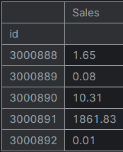You now have the skills to clean data, apply the RandomForestRegressor, and make predictions on a test set. You can explore similar datasets on Kaggle and use the same model to make predictions. Additionally, Kaggle offers a great opportunity to deepen your knowledge of machine learning.